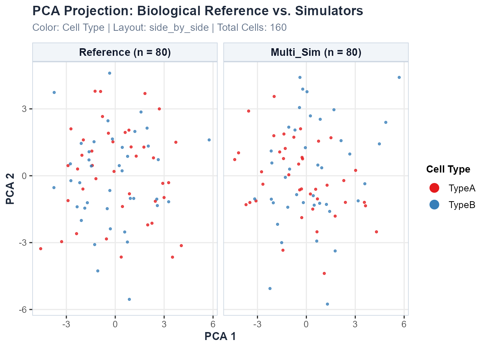

Demonstration 3: Multiomics (scRNA-seq + scATAC-seq) Simulation Evaluation
Source:vignettes/demo-multiomics.Rmd
demo-multiomics.RmdIntroduction
Single-cell multiomics technologies allow simultaneous or parallel measurement of multiple cellular features — most commonly gene expression (scRNA-seq) and chromatin accessibility (scATAC-seq). Simulating multiomics data presents unique challenges because algorithms must preserve not only the distinct statistical properties of each individual modality, but also the biological coupling and regulatory relationships between them.
scSimEval is designed to evaluate simulation fidelity
across three distinct multiomics experimental designs,
each with a different level of cell-level pairing between modalities.
Understanding which design your simulated data belongs to is essential
for selecting the correct evaluation functions.
Part 1: Understanding Multiomics Data Types
1.1 Paired Multiomics (Co-assay)
Definition: Both scRNA-seq and scATAC-seq are measured simultaneously from the exact same individual cells. Each cell barcode in the RNA matrix has a corresponding and biologically meaningful entry at the same column index in the ATAC matrix.
Technologies: 10x Chromium Multiome, SHARE-seq, SNARE-seq, Paired-seq, ASTAR-seq
Simulators: scMultiSim (Li et al., Nat Methods 2023), SymSim2+ATAC, MultiSim
What scSimEval can evaluate:
- ✅ Full unimodal evaluation for each modality (Categories 1–6 and 8)
- ✅ All Category 7 cross-modal coupling metrics:
- FOSCTTM and Match@1 (cell alignment in joint embedding space)
- Cross-modal generation fidelity (predict ATAC from RNA, or vice versa)
- Direct peak-to-gene regulatory linkage (promoter/enhancer accessibility vs. transcription)
- Cross-modality feature correlation fidelity
- Modality alignment and mixing score in joint latent space
1.2 Unpaired Multiomics (Independent profiling)
Definition: scRNA-seq and scATAC-seq are profiled from different cells derived from the same biological tissue, cell line, or sample. Cell barcodes do not correspond between modalities — column i of the RNA matrix and column i of the ATAC matrix represent entirely different cells.
Technologies: Bulk ATAC + scRNA-seq, independent 10x scATAC + scRNA experiments on the same tissue, sci-ATAC-seq paired with scRNA-seq on sibling aliquots
Simulators: Splatter (RNA only) + ArchR (ATAC only) used separately, AMULET
What scSimEval can evaluate:
- ✅ Full unimodal evaluation for each modality independently (Categories 1–6 and 8)
- ✅ Population-level cross-modal metrics that do not
require cell-by-cell pairing:
- Cross-modal label transfer accuracy
(
evaluate_cross_modal_prediction) - Co-expression module fidelity
(
calc_coexpression_module_fidelity) - Peak co-accessibility fidelity
(
calc_peak_coaccessibility_fidelity) - Network topology similarity (
calc_network_jaccard) - Chromatin accessibility profile concordance
(
calc_accessibility_profile_concordance)
- Cross-modal label transfer accuracy
(
- ❌ NOT applicable (require 1-to-1 cell pairing):
- FOSCTTM and Match@1
(
calc_foscttm) - Cross-modal generation fidelity
(
calc_cross_modal_generation) - Peak-to-gene regulatory coupling
(
calc_atac_rna_coupling) - Cross-modality correlation
(
calc_cross_modality_correlation)
- FOSCTTM and Match@1
(
Note: Using
evaluate_multiomics_accuracy()directly on unpaired data is NOT recommended because it internally calls paired metrics. Instead, useevaluate_simulation_accuracy()per modality plus the population-level functions listed above, and combine results withevaluate_multiple_datasets().
1.3 Mosaic Multiomics (Partial co-measurement)
Definition: A subset of cells has measurements in both modalities, while the remaining cells have measurements in only one modality. This arises from experimental designs that pool paired and unpaired samples, or from modality dropout in co-assay experiments.
Technologies: DOGMA-seq (DNA + RNA + protein + ATAC, but with high dropout), mosaic pooling designs (mixing Multiome cells with scRNA-only or scATAC-only cells), partially overlapping patient cohorts
Simulators: MultiVI (Lopez et al., Nat Methods 2023), Cobolt, MOFA+ imputation
What scSimEval can evaluate:
- ✅ Full unimodal evaluation on the complete single-modality matrices (Categories 1–6, 8)
- ✅ Paired Category 7 coupling metrics on the co-assayed cell subset only
- ✅ Population-level cross-modal metrics on the full matrices
- ⚠️ Recommendation: Extract the co-assayed subset first, then call paired metrics on it
1.4 Metric Compatibility Summary
| Metric / Function | Paired | Unpaired | Mosaic (paired subset) |
|---|---|---|---|
evaluate_simulation_accuracy() per modality |
✅ | ✅ | ✅ |
evaluate_clustering_metrics() |
✅ | ✅ | ✅ |
evaluate_batch_metrics() |
✅ | ✅ | ✅ |
evaluate_deg_fidelity() |
✅ | ✅ | ✅ |
evaluate_trajectory_metrics() |
✅ | ✅ | ✅ |
calc_coexpression_module_fidelity() |
✅ | ✅ | ✅ |
calc_peak_coaccessibility_fidelity() |
✅ | ✅ | ✅ |
calc_accessibility_profile_concordance() |
✅ | ✅ | ✅ |
calc_network_jaccard() |
✅ | ✅ | ✅ |
evaluate_cross_modal_prediction() |
✅ | ✅ | ✅ |
calc_modality_alignment() |
✅ | ⚠️ needs integration first | ✅ on subset |
calc_foscttm() |
✅ | ❌ | ✅ on subset |
calc_cross_modal_generation() |
✅ | ❌ | ✅ on subset |
calc_atac_rna_coupling() |
✅ | ❌ | ✅ on subset |
calc_cross_modality_correlation() |
✅ | ❌ | ✅ on subset |
evaluate_multiomics_accuracy() |
✅ | ❌ direct use | ✅ on subset |
Part 2: Evaluating Paired Multiomics
2.1 Loading the Example Paired Dataset
scSimEval includes a paired scRNA-seq + scATAC-seq
dataset (example_multiomics) where every column in the RNA
matrix corresponds to the same cell in the ATAC matrix:
library(scSimEval)
# Load packaged paired multiomics example dataset
data(example_multiomics)
cat("Reference RNA dimensions:", dim(example_multiomics$ref_multi$rna), "\n")
#> Reference RNA dimensions: 60 80
cat("Reference ATAC dimensions:", dim(example_multiomics$ref_multi$atac), "\n")
#> Reference ATAC dimensions: 60 80
cat("Simulated RNA dimensions:", dim(example_multiomics$sim_multi$rna), "\n")
#> Simulated RNA dimensions: 60 80
cat("Simulated ATAC dimensions:", dim(example_multiomics$sim_multi$atac), "\n")
#> Simulated ATAC dimensions: 60 80
cat("Cell types:", levels(example_multiomics$cell_types), "\n")
#> Cell types: TypeA TypeBThe dataset contains:
-
ref_multi: Named listrna(count matrix) andatac(peak accessibility matrix), both measured from the same cells. -
sim_multi: Simulated pairedrnaandatacmatrices. -
cell_types: Cell type annotations shared across both modalities. -
batch_info: Batch labels shared across both modalities. -
resource_stats: Hardware logs (runtime in seconds and peak RAM in MiB).
2.2 Alignment in Joint Embedding Space (FOSCTTM & Match@1)
FOSCTTM (Fraction Of Samples Closer Than The True Match) quantifies whether paired cells are each other’s nearest neighbors in joint latent space. Valid only for paired data.
# Compute reduced representations (PCA) for RNA and ATAC
pca_rna <- prcomp(t(example_multiomics$ref_multi$rna), rank. = 5)$x
pca_atac <- prcomp(t(example_multiomics$ref_multi$atac), rank. = 5)$x
foscttm_res <- calc_foscttm(x = pca_rna, y = pca_atac)
cat("Bidirectional FOSCTTM score:", round(foscttm_res$foscttm, 4), "\n")
#> Bidirectional FOSCTTM score: 0.455
cat("Top-1 Match Rate (Match@1):", round(foscttm_res$match_at_1, 4), "\n")
#> Top-1 Match Rate (Match@1): 0.0125A score of 0.00 indicates perfect alignment; 0.50 represents random chance.
2.3 Cross-Modal Cell Type Label Transfer
Tests whether chromatin accessibility profiles in simulated ATAC can predict cell types annotated in RNA. This metric works for all three data types because it uses population-level kNN classification:
transfer_res <- evaluate_cross_modal_prediction(
mod1_data = example_multiomics$sim_multi$atac,
cell_types = example_multiomics$cell_types
)
cat("Cross-Modal Prediction Accuracy:", round(transfer_res$cross_modal_accuracy, 4), "\n")
#> Cross-Modal Prediction Accuracy: 0.8125
cat("Cross-Modal Macro F1 Score:", round(transfer_res$cross_modal_F1, 4), "\n")
#> Cross-Modal Macro F1 Score: 0.80572.4 Master Paired Pipeline:
evaluate_multiomics_accuracy()
For fully paired data, the master function coordinates all 8 categories:
master_eval <- evaluate_multiomics_accuracy(
ref_multi = example_multiomics$ref_multi,
sim_multi = example_multiomics$sim_multi,
cell_types = example_multiomics$cell_types,
elapsed_time = example_multiomics$resource_stats$elapsed_time,
memory_mb = example_multiomics$resource_stats$memory_mb,
verbose = FALSE
)
head(master_eval$benchmark_summary_table)
#> Category Property Metric Value Modality
#> 1 Distributional Properties library_size MAD 1.500000e+01 rna
#> 2 Distributional Properties library_size KS 2.125000e-01 rna
#> 3 Distributional Properties library_size MAE 1.506250e+01 rna
#> 4 Distributional Properties library_size RMSE 1.571504e+01 rna
#> 5 Distributional Properties library_size OV 8.269394e-01 rna
#> 6 Distributional Properties library_size Bhattacharyya 1.188839e-04 rnaPart 3: Evaluating Unpaired Multiomics
For unpaired data, scRNA-seq and scATAC-seq come from different cells. The recommended workflow is to evaluate each modality independently and combine results.
3.1 Step-by-Step Workflow for Unpaired Data
library(scSimEval)
data(example_scrna) # RNA modality
data(example_scatac) # ATAC modality (different cells)
# ── Step 1: Evaluate each modality independently ──────────────────────────────
rna_eval <- evaluate_simulation_accuracy(
ref_data = example_scrna$ref,
sim_data = example_scrna$sim,
compute_bivariate = FALSE,
verbose = FALSE
)
atac_eval <- evaluate_simulation_accuracy(
ref_data = example_scatac$ref,
sim_data = example_scatac$sim,
compute_bivariate = FALSE,
verbose = FALSE
)
# ── Step 2: Population-level cross-modal metrics (no cell pairing needed) ─────
# 2a. Co-expression module fidelity (RNA only, no pairing needed)
module_fid <- calc_coexpression_module_fidelity(
ref_mat = example_scrna$ref,
sim_mat = example_scrna$sim
)
cat("Module correlation r:", round(module_fid$module_correlation_r, 4), "\n")
# 2b. Peak co-accessibility fidelity (ATAC only, no pairing needed)
coaccess_fid <- calc_peak_coaccessibility_fidelity(
ref_atac = example_scatac$ref,
sim_atac = example_scatac$sim
)
cat("RV coefficient:", round(coaccess_fid$rv_coefficient, 4), "\n")
# 2c. Cross-modal label transfer (uses ATAC features to predict RNA-based labels)
# NOTE: cell_types come from the RNA experiment; applied to ATAC data for transfer
label_transfer <- evaluate_cross_modal_prediction(
mod1_data = example_scatac$sim,
cell_types = example_scatac$cell_types
)
cat("Label transfer accuracy:", round(label_transfer$cross_modal_accuracy, 4), "\n")
# ── Step 3: Consolidate and compare across modalities ─────────────────────────
dataset_collection <- list(
"Method_A-RNA" = list(ref = example_scrna$ref, sim = example_scrna$sim),
"Method_A-ATAC" = list(ref = example_scatac$ref, sim = example_scatac$sim)
)
consolidated <- evaluate_multiple_datasets(
datasets = dataset_collection,
pair_by_prefix = TRUE,
compute_bivariate = FALSE,
verbose = FALSE
)
print(consolidated$dataset_overview)Key point: Do NOT call
calc_foscttm(),calc_cross_modal_generation(),calc_atac_rna_coupling(), orcalc_cross_modality_correlation()on unpaired data. These functions assume row/columniof the RNA matrix matches row/columniof the ATAC matrix — an assumption that is biologically false for unpaired experiments.
Part 4: Evaluating Mosaic Multiomics
For mosaic data (where only some cells have both modalities), the strategy is:
- Extract co-assayed cells — the subset that has measurements in both RNA and ATAC.
-
Run paired metrics on this subset using
evaluate_multiomics_accuracy()or individual Category 7 functions. - Run unimodal metrics on the full single-modality matrices.
4.1 Step-by-Step Workflow for Mosaic Data
# Suppose your mosaic simulator output looks like this:
# - sim_rna_full: RNA matrix for ALL cells (including RNA-only cells)
# - sim_atac_full: ATAC matrix for ALL cells (including ATAC-only cells)
# - paired_cell_idx: logical or integer index of cells with BOTH modalities
# ── Step 1: Identify co-assayed cell subset ───────────────────────────────────
# (This index should come from your simulator's output metadata)
# Example: first 200 cells are co-assayed, rest are single-modality
paired_idx <- 1:200
sim_rna_paired <- sim_rna_full[, paired_idx]
sim_atac_paired <- sim_atac_full[, paired_idx]
ref_rna_paired <- ref_rna_full[, paired_idx]
ref_atac_paired <- ref_atac_full[, paired_idx]
# ── Step 2: Paired coupling metrics on the co-assayed subset ──────────────────
paired_eval <- evaluate_multiomics_accuracy(
ref_multi = list(rna = ref_rna_paired, atac = ref_atac_paired),
sim_multi = list(rna = sim_rna_paired, atac = sim_atac_paired),
cell_types = cell_types_paired,
verbose = FALSE
)
# ── Step 3: Full unimodal evaluation on the complete matrices ─────────────────
rna_full_eval <- evaluate_simulation_accuracy(
ref_data = ref_rna_full,
sim_data = sim_rna_full,
compute_bivariate = FALSE,
verbose = FALSE
)
atac_full_eval <- evaluate_simulation_accuracy(
ref_data = ref_atac_full,
sim_data = sim_atac_full,
compute_bivariate = FALSE,
verbose = FALSE
)
# ── Step 4: Population-level cross-modal metrics (full matrices) ──────────────
module_fid <- calc_coexpression_module_fidelity(ref_rna_full, sim_rna_full)
coaccess <- calc_peak_coaccessibility_fidelity(ref_atac_full, sim_atac_full)Part 5: Visualization
scSimEval visualization functions work seamlessly across
unimodal, paired, and unpaired multiomics configurations:
# Multi-dataset consolidated benchmark bubble matrix
plot_benchmark_bubble_matrix(
data = consolidated,
title = "Benchmarking Multiomics Simulators"
)
# Evaluation summary horizontal bar matrix
plot_evaluation_summary(
data = consolidated,
title = "Multiomics Simulator Leaderboard"
)5.1 Low-Dimensional Multiomics Cell Embeddings
To visually examine whether simulated cells maintain the biological manifold of empirical data across modalities, researchers can project reference and simulated cells into low-dimensional UMAP, t-SNE, or PCA coordinates:
# Compute low-dimensional embeddings for the scRNA-seq modality
emb_rna <- compute_dataset_embeddings(
reference = example_multiomics$ref_multi$rna,
simulated = list("Multi_Sim" = example_multiomics$sim_multi$rna),
reduction = "pca",
n_pcs = 5,
cell_types = example_multiomics$cell_types
)
# Plot multiomics cell embeddings
plot_dataset_embeddings(
embedding_data = emb_rna,
reduction = "pca",
layout = "side_by_side",
color_by = "cell_type"
)
# Quantitative embedding quality metrics
knitr::kable(compute_embedding_quality_metrics(emb_rna), digits = 4)| Dataset | Role | Cells (N) | Mean Silhouette | ARI (Cluster Fidelity) | Mean Library Size | Mean Detected Features | Library Size Diff (%) |
|---|---|---|---|---|---|---|---|
| Reference | Reference | 80 | -0.0101 | -0.0027 | 256.3 | 49.2 | 0.00 |
| Multi_Sim | Simulated | 80 | 0.0037 | -0.0071 | 242.3 | 48.3 | 5.46 |
Part 6: Summary
| Data Type | Example Technologies | evaluate_multiomics_accuracy() |
Category 7 Metrics | Recommended Function |
|---|---|---|---|---|
| Paired | 10x Multiome, SHARE-seq | ✅ Direct | All 6 metrics | evaluate_multiomics_accuracy() |
| Unpaired | Independent scRNA + scATAC | ❌ Not valid | Modularity, label transfer, network only |
evaluate_simulation_accuracy() × 2 +
evaluate_multiple_datasets()
|
| Mosaic | DOGMA-seq, mosaic pooling | ✅ On paired subset | All 6 metrics on paired subset | Subset first, then evaluate_multiomics_accuracy()
|
The most important rule: Cell-pairing metrics (FOSCTTM, cross-modal generation, peak-to-gene coupling) are only scientifically valid when the RNA and ATAC columns correspond to the same physical cells. For unpaired and mosaic data, rely on population-level metrics and per-modality unimodal evaluation.
sessionInfo()
#> R version 4.6.1 (2026-06-24 ucrt)
#> Platform: x86_64-w64-mingw32/x64
#> Running under: Windows 11 x64 (build 26200)
#>
#> Matrix products: default
#> LAPACK version 3.12.1
#>
#> locale:
#> [1] LC_COLLATE=English_India.utf8 LC_CTYPE=English_India.utf8
#> [3] LC_MONETARY=English_India.utf8 LC_NUMERIC=C
#> [5] LC_TIME=English_India.utf8
#>
#> time zone: Asia/Calcutta
#> tzcode source: internal
#>
#> attached base packages:
#> [1] stats graphics grDevices utils datasets methods base
#>
#> other attached packages:
#> [1] scSimEval_0.99.4
#>
#> loaded via a namespace (and not attached):
#> [1] tidyselect_1.2.1 ade4_1.7-24
#> [3] dplyr_1.2.1 farver_2.1.2
#> [5] S7_0.2.2 fastmap_1.2.0
#> [7] SingleCellExperiment_1.34.0 RANN_2.6.2
#> [9] bluster_1.22.0 digest_0.6.39
#> [11] lifecycle_1.0.5 cluster_2.1.8.3
#> [13] statmod_1.5.2 magrittr_2.0.5
#> [15] kernlab_0.9-33 compiler_4.6.1
#> [17] rlang_1.3.0 sass_0.4.10
#> [19] tools_4.6.1 igraph_2.3.3
#> [21] yaml_2.3.12 knitr_1.51
#> [23] labeling_0.4.3 S4Arrays_1.13.0
#> [25] htmlwidgets_1.6.4 mclust_6.1.3
#> [27] DelayedArray_0.38.2 RColorBrewer_1.1-3
#> [29] abind_1.4-8 BiocParallel_1.47.0
#> [31] withr_3.0.3 BiocGenerics_0.58.1
#> [33] desc_1.4.3 nnet_7.3-21
#> [35] grid_4.6.1 stats4_4.6.1
#> [37] e1071_1.7-17 edgeR_4.10.1
#> [39] ggplot2_4.0.3 scales_1.4.0
#> [41] fpc_2.2-15 MASS_7.3-66
#> [43] prabclus_2.3-5 dichromat_2.0-1
#> [45] SummarizedExperiment_1.42.0 cli_3.6.6
#> [47] rmarkdown_2.31 ragg_1.5.2
#> [49] generics_0.1.4 otel_0.2.0
#> [51] robustbase_0.99-7 cachem_1.1.0
#> [53] proxy_0.4-29 modeltools_0.2-24
#> [55] splines_4.6.1 clValid_0.7
#> [57] parallel_4.6.1 XVector_0.52.0
#> [59] vctrs_0.7.3 matrixStats_1.5.0
#> [61] Matrix_1.7-6 jsonlite_2.0.0
#> [63] IRanges_2.46.0 S4Vectors_0.50.1
#> [65] BiocNeighbors_2.6.0 irlba_2.3.7
#> [67] clue_0.3-68 systemfonts_1.3.2
#> [69] locfit_1.5-9.12 diptest_0.77-2
#> [71] limma_3.68.4 jquerylib_0.1.4
#> [73] glue_1.8.1 pkgdown_2.2.1
#> [75] DEoptimR_1.2-0 codetools_0.2-20
#> [77] gtable_0.3.6 GenomicRanges_1.64.0
#> [79] tibble_3.3.1 pillar_1.11.1
#> [81] htmltools_0.5.9 Seqinfo_1.2.0
#> [83] clusterSim_0.51-6 R6_2.6.1
#> [85] textshaping_1.0.5 evaluate_1.0.5
#> [87] lattice_0.22-9 Biobase_2.73.2
#> [89] bslib_0.12.0 class_7.3-24
#> [91] Rcpp_1.1.2 flexmix_2.3-21
#> [93] SparseArray_1.13.2 xfun_0.60
#> [95] fs_2.1.0 MatrixGenerics_1.24.0
#> [97] pkgconfig_2.0.3